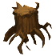
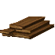

Пни
Предметы / Добыча
Открыть в интерактивной вики →
| Вес | 20 |
|---|---|
| Цена | 0 |
Описание
Более эффективный источник

Доски, необходимых для развития гильдии.| Более выгодный источник досок для развития гильдии. |
Рецепт
Обмен
Где найти
Применение
|
Как добыть
| Сбор в локации: |